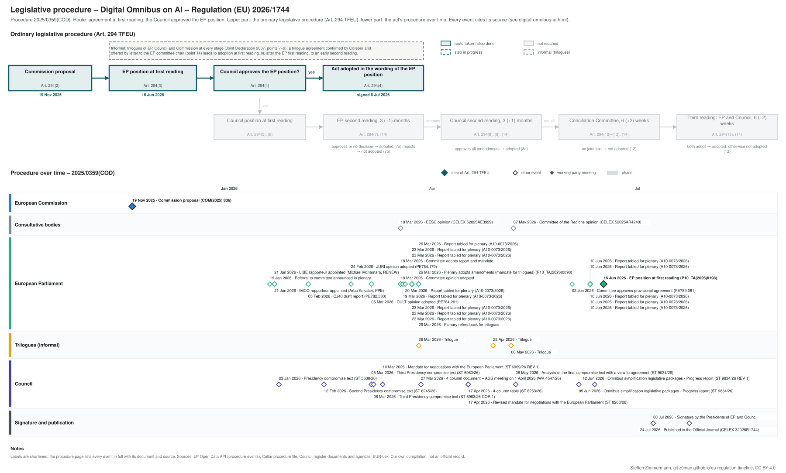

← Regulation timeline › Digital Omnibus on AI › Legislative procedure · All procedures
Digital Omnibus on AI – Regulation (EU) 2026/1744
Procedure 2025/0359(COD), completed. Drawing: SVG · PNG · PDF (A3) · draw.io · Page as Markdown: digital-omnibus-ai.md


| Stage | Completed, published 24 Jul 2026 |
|---|---|
| Route (Art. 294 TFEU) | Agreement at first reading: the Council approved the EP position |
| Latest activity | 24 Jul 2026 · Signature and publication: Published in the Official Journal (CELEX 32026R1744) |

European Parliament committees
| Committee | Role | Rapporteur | Shadow rapporteurs |
|---|---|---|---|
| IMCO Internal Market and Consumer Protection | Responsible | Arba Kokalari (EPP), appointed 21 Jan 2026 | Brando Benifei (S&D), Virginie Joron (PfE), Piotr Müller (ECR), Svenja Hahn (Renew), Kim Van Sparrentak (Greens/EFA), Leila Chaibi (The Left) |
| LIBE Civil Liberties, Justice and Home Affairs | Responsible | Michael Mcnamara (Renew), appointed 21 Jan 2026 | Axel Voss (EPP), Kristian Vigenin (S&D), Jaroslav Bžoch (PfE), Assita Kanko (ECR), Markéta Gregorová (Greens/EFA), Pernando Barrena Arza (The Left), Mary Khan (ESN) |
| CULT Culture and Education | Opinion | Emma Rafowicz (S&D), appointed 20 Jan 2026 | Zoltán Tarr (EPP), Lara Magoni (ECR), Laurence Farreng (Renew), Zsuzsanna Borvendég (ESN) |
| ITRE Industry, Research and Energy | Opinion | not yet appointed | – |
| JURI Legal Affairs | Opinion | Sergey Lagodinsky (Greens/EFA), appointed 3 Dec 2025 | Laurence Farreng (Renew), Adrián Vázquez Lázara (EPP), José Cepeda (S&D), Ton Diepeveen (PfE), Tobiasz Bocheński (ECR) |
| TRAN Transport and Tourism | Opinion | Vivien Costanzo (S&D), appointed 21 Jan 2026 | Sophia Kircher (EPP), Kosma Złotowski (ECR), Oihane Agirregoitia Martínez (Renew), Jutta Paulus (Greens/EFA), Elena Kountoura (The Left) |
| BUDG Budgets | Budgetary assessment | not yet appointed | – |
Source: EP Open Data API (participations) and the Legislative Observatory (joint committee, opinions declined); names link to each Member's page on the EP website. The API names no committee for shadow rapporteurs; they are assigned by the EP's order of participants, which groups each committee.
Events
| Date | Actor | Event | Document | Source |
|---|---|---|---|---|
| 19 Nov 2025 | European Commission | Commission proposal (Art. 294(2) TFEU) | COM(2025) 836 · en.md de.md | Cellar (CELEX 52025PC0836) |
| 19 Jan 2026 | European Parliament | Referral to committee announced in plenary | EP procedure file | EP Open Data API, procedure 2025-0359 (referral) |
| 21 Jan 2026 | European Parliament | IMCO rapporteur appointed (Arba Kokalari, PPE) | EP procedure file | EP Open Data API, procedure 2025-0359 (participation RAPPORTEUR) |
| 21 Jan 2026 | European Parliament | LIBE rapporteur appointed (Michael Mcnamara, RENEW) | EP procedure file | EP Open Data API, procedure 2025-0359 (participation RAPPORTEUR) |
| 23 Jan 2026 | Council | Presidency compromise text | ST 5638/26 | Cellar procedure file 2025/359 (Council register) |
| 5 Feb 2026 | European Parliament | CJ40 draft report | PE782.530 | EP Open Data API, procedure 2025-0359 (committee tabling report) |
| 12 Feb 2026 | Council | Second Presidency compromise text | ST 6245/26 | Cellar procedure file 2025/359 (Council register) |
| 24 Feb 2026 | European Parliament | JURI opinion adopted | PE784.179 | EP Open Data API, procedure 2025-0359 (committee adopting opinion) |
| 5 Mar 2026 | Council | Third Presidency compromise text | ST 6963/26 | Cellar procedure file 2025/359 (Council register) |
| 5 Mar 2026 | European Parliament | CULT opinion adopted | PE784.261 | EP Open Data API, procedure 2025-0359 (committee adopting opinion) |
| 6 Mar 2026 | Council | Third Presidency compromise text | ST 6963/26 COR 1 | Cellar procedure file 2025/359 (Council register) |
| 10 Mar 2026 | Council | Mandate for negotiations with the European Parliament | ST 6969/26 REV 1 | Cellar procedure file 2025/359 (Council register) |
| 18 Mar 2026 | Consultative bodies | EESC opinion | CELEX 52025AE3929 | Cellar procedure file 2025/359 |
| 18 Mar 2026 | European Parliament | Committee opinion adopted | EP procedure file | EP Open Data API, procedure 2025-0359 (committee adopting opinion) |
| 18 Mar 2026 | European Parliament | Committee adopts report and mandate | EP procedure file | EP Open Data API, procedure 2025-0359 (committee adopting report) |
| 19 Mar 2026 | European Parliament | Report tabled for plenary | A10-0073/2026 | EP Open Data API, procedure 2025-0359 (tabling plenary) |
| 20 Mar 2026 | European Parliament | Report tabled for plenary | A10-0073/2026 | EP Open Data API, procedure 2025-0359 (tabling plenary) |
| 23 Mar 2026 | European Parliament | Report tabled for plenary | A10-0073/2026 | EP Open Data API, procedure 2025-0359 (tabling plenary) |
| 23 Mar 2026 | European Parliament | Report tabled for plenary | A10-0073/2026 | EP Open Data API, procedure 2025-0359 (tabling plenary) |
| 23 Mar 2026 | European Parliament | Report tabled for plenary | A10-0073/2026 | EP Open Data API, procedure 2025-0359 (tabling plenary) |
| 23 Mar 2026 | European Parliament | Report tabled for plenary | A10-0073/2026 | EP Open Data API, procedure 2025-0359 (tabling plenary) |
| 23 Mar 2026 | European Parliament | Report tabled for plenary | A10-0073/2026 | EP Open Data API, procedure 2025-0359 (tabling plenary) |
| 26 Mar 2026 | European Parliament | Plenary adopts amendments (mandate for trilogues) | P10_TA(2026)0098 | EP Open Data API, procedure 2025-0359 (plenary amend) |
| 26 Mar 2026 | European Parliament | Report tabled for plenary | A10-0073/2026 | EP Open Data API, procedure 2025-0359 (tabling plenary) |
| 26 Mar 2026 | European Parliament | Plenary refers back for trilogues | EP procedure file | EP Open Data API, procedure 2025-0359 (plenary refer committee interinstitutional negotiations) |
| 26 Mar 2026 | Trilogues (informal) | Trilogue | EP procedure file | EP Open Data API, procedure 2025-0359 (interinstitutional negotiation) |
| 27 Mar 2026 | Council | 4 column document – AGS meeting on 1 April 2026 | WK 4547/26 | Cellar procedure file 2025/359 (Council register) |
| 17 Apr 2026 | Council | 4-column table | ST 8253/26 | Cellar procedure file 2025/359 (Council register) |
| 17 Apr 2026 | Council | Revised mandate for negotiations with the European Parliament | ST 8260/26 | Cellar procedure file 2025/359 (Council register) |
| 28 Apr 2026 | Trilogues (informal) | Trilogue | EP procedure file | EP Open Data API, procedure 2025-0359 (interinstitutional negotiation) |
| 6 May 2026 | Trilogues (informal) | Trilogue | EP procedure file | EP Open Data API, procedure 2025-0359 (interinstitutional negotiation) |
| 7 May 2026 | Consultative bodies | Committee of the Regions opinion | CELEX 52025AR4240 | Cellar procedure file 2025/359 |
| 8 May 2026 | Council | Analysis of the final compromise text with a view to agreement | ST 9034/26 | Cellar procedure file 2025/359 (Council register) |
| 2 Jun 2026 | European Parliament | Committee approves provisional agreement | PE789.081 | EP Open Data API, procedure 2025-0359 (committee approve provisional agreement) |
| 5 Jun 2026 | Council | Omnibus simplification legislative packages - Progress report | ST 9834/26 | Cellar procedure file 2025/359 (Council register) |
| 10 Jun 2026 | European Parliament | Report tabled for plenary | A10-0073/2026 | EP Open Data API, procedure 2025-0359 (tabling plenary) |
| 10 Jun 2026 | European Parliament | Report tabled for plenary | A10-0073/2026 | EP Open Data API, procedure 2025-0359 (tabling plenary) |
| 10 Jun 2026 | European Parliament | Report tabled for plenary | A10-0073/2026 | EP Open Data API, procedure 2025-0359 (tabling plenary) |
| 10 Jun 2026 | European Parliament | Report tabled for plenary | A10-0073/2026 | EP Open Data API, procedure 2025-0359 (tabling plenary) |
| 10 Jun 2026 | European Parliament | Report tabled for plenary | A10-0073/2026 | EP Open Data API, procedure 2025-0359 (tabling plenary) |
| 12 Jun 2026 | Council | Omnibus simplification legislative packages - Progress report | ST 9834/26 REV 1 | Cellar procedure file 2025/359 (Council register) |
| 16 Jun 2026 | European Parliament | EP position at first reading (Art. 294(3) TFEU) | P10_TA(2026)0198 | EP Open Data API, procedure 2025-0359 (plenary adopt position) |
| 8 Jul 2026 | Signature and publication | Signature by the Presidents of EP and Council | EP procedure file | EP Open Data API, procedure 2025-0359 (signature) |
| 24 Jul 2026 | Signature and publication | Published in the Official Journal | CELEX 32026R1744 · en.md de.md | EP Open Data API, procedure 2025-0359 (publication official journal) |
Documents
Every document the Council register, the EU database of the Parliament of Austria or the EP lists for the procedure, with its state: public documents link to the official file; documents that are not public link to their entry in the Austrian database where there is one (metadata only). Status: public; not public; not public, leak available (an unofficial copy is known to circulate outside the institutions; it is neither published nor quoted here). Released: when a document listed as not public was released, by the date of the Council's public PDF (a technical date) or else the day our daily check found it public.
| Date | Document | Kind | Subject | Status | Released | Text |
|---|---|---|---|---|---|---|
| 20 Nov 2025 | ST 15698/25 ADD 2 | Council: transmission note | Commission staff working document Accompanying the documents Proposal for a Regulation of the European Parliament and of the Council Amending Regulations (EU) … | public status unknown | – | – |
| 20 Nov 2025 | ST 15708/25 | Council: transmission note | Proposal for a Regulation of the European Parliament and of the Council amending Regulations (EU) 2024/1689 and (EU) 2018/1139 as regards the simplification of … | public status unknown | – | – |
| 29 Nov 2025 | WK 16524/25 | Council note | Digital Omnibus and Digital Omnibus on Artificial Intelligence (AI) - Comments from Austria and other Member States | public | – | – |
| 1 Dec 2025 | WK 16586/25 | Council note | Digital Omnibus – Presentation by the Commission (AGS on 1 December) | public | – | – |
| 4 Dec 2025 | ST 16131/25 REV 1 | Council note | Simplification a) 2025 Annual Overview Report b) Annual Progress Reports - Presentation by the Commission - Exchange of views | public status unknown | – | – |
| 8 Dec 2025 | WK 17004/25 | Council note | Digital Omnibus and Digital Omnibus on AI - Comments from Austria and other Member States | public | – | – |
| 10 Dec 2025 | WK 17059/25 | Council note | Presidency discussion note for the AGS on 15 December | public status unknown | – | – |
| 16 Dec 2025 | WK 17396/25 | Council note | Digital Omnibus on AI – Presentation by the Commission (AGS on 15 December) | public status unknown | – | – |
| 19 Dec 2025 | WK 17591/25 | Council note | Presidency discussion note for the AGS on 9 January 2026 | public status unknown | – | – |
| 9 Jan 2026 | WK 251/26 | Council note | Digital Omnibus on AI – Presentation by the Commission (AGS on 9 January 2026 ) | public status unknown | – | – |
| 9 Jan 2026 | WK 252/26 | Council note | Priorities and work programme of the Cyprus Presidency - Presentation by the Presidency (AGS on 9 January 2026) | public status unknown | – | – |
| 23 Jan 2026 | ST 5638/26 | Council: Presidency compromise text | Presidency compromise text | public | – | – |
| 23 Jan 2026 | WK 1027/26 | Council note | Digital Omnibus on AI – Explanatory note | public status unknown | – | – |
| 5 Feb 2026 | PE782.530 | EP draft report (rapporteur) | DRAFT REPORT on the proposal for a regulation of the European Parliament and of the Council amending Regulations (EU) 2024/1689 and (EU) 2018/1139 as regards … | public | – | – |
| 6 Feb 2026 | ST 6057/26 | Council note | Optional consultation of the Committee of the Regions1 | public status unknown | – | – |
| 12 Feb 2026 | ST 6245/26 | Council: Presidency compromise text | Second Presidency compromise text | public | – | – |
| 13 Feb 2026 | WK 2384/26 | Council note | Explanatory note on the second Presidency compromise text – AGS on 18 February | public status unknown | – | – |
| 14 Feb 2026 | PE784.274 | EP amendments | public status unknown | – | – | |
| 14 Feb 2026 | PE784.275 | EP amendments | public status unknown | – | – | |
| 14 Feb 2026 | PE784.309 | EP amendments | public status unknown | – | – | |
| 23 Feb 2026 | WK 17679/25 ADD 1 COR 1 | Council note | compiled comments (ddl 18/12) -CORRIGENDUM | public status unknown | – | – |
| 23 Feb 2026 | WK 17679/25 ADD 1 COR 2 | Council note | compiled comments (ddl 18/12) -CORRIGENDUM | public status unknown | – | – |
| 23 Feb 2026 | WK 17679/25 ADD 1 REV 1 | Council note | compiled comments (ddl 18/12) | public status unknown | – | – |
| 26 Feb 2026 | PE784.179 | EP opinion | Opinion on the proposal for a regulation of the European Parliament and of the Council amending Regulations (EU) 2024/1689 and (EU) 2018/1139 as regards the … | public | – | – |
| 5 Mar 2026 | ST 6963/26 | Council: Presidency compromise text | Third Presidency compromise text | public | – | – |
| 5 Mar 2026 | WK 3257/26 | Council note | (Digital Omnibus on AI) - MS comments on the second Presidency compromise text - deadline 26 Feb. 2026 | public status unknown | – | – |
| 5 Mar 2026 | WK 3257/26 ADD 1 | Council note | (Digital Omnibus on AI) - MS comments on the second Presidency compromise text - deadline 26 Feb. 2026 - DE and IT (bis) | public status unknown | – | – |
| 6 Mar 2026 | PE784.261 | EP opinion | Opinion on the proposal for a regulation of the European Parliament and of the Council amending Regulations (EU) 2024/1689 and (EU) 2018/1139 as regards the … | public | – | – |
| 6 Mar 2026 | ST 6963/26 COR 1 | Council: Presidency compromise text | Third Presidency compromise text | public | – | – |
| 6 Mar 2026 | WK 3257/26 ADD 2 | Council note | (Digital Omnibus on AI) - MS comments on the second Presidency compromise text - deadline 26 Feb. 2026 - BG | public status unknown | – | – |
| 6 Mar 2026 | WK 3432/26 REV 1 | Council note | Explanatory note on the third compromise text – AGS meeting on 9 March 2026 | public status unknown | – | – |
| 10 Mar 2026 | ST 6969/26 REV 1 | Council position (mandate) | Mandate for negotiations with the European Parliament | public | – | – |
| 11 Mar 2026 | WK 3803/26 | Council note | Digital Omnibus on AI - MS compiled comments on the third Presidency compromise text - AGS meeting of 9 March 2026 | public status unknown | – | – |
| 11 Mar 2026 | WK 3803/26 ADD 1 | Council note | Digital Omnibus on AI - MS compiled comments on the third Presidency compromise text - AGS meeting of 9 March 2026 - additional comments FR & IT | public status unknown | – | – |
| 17 Mar 2026 | ST 7384/26 | Council: transmission note | European Central Bank/ ECB Opinion | public status unknown | – | – |
| 18 Mar 2026 | CELEX 52025AE3929 | Opinion | Opinion of the European Economic and Social Committee a) Proposal for a Regulation of the European Parliament and of the Council amending Regulations (EU) … | public | – | – |
| 19 Mar 2026 | A10-0073/2026 | EP committee report | Report on the proposal for a regulation of the European Parliament and of the Council amending Regulations (EU) 2024/1689 and (EU) 2018/1139 as regards the … | public | – | – |
| 20 Mar 2026 | A10-0073/2026 | EP committee report | public status unknown | – | – | |
| 23 Mar 2026 | A10-0073/2026 | EP committee report | public status unknown | – | – | |
| 23 Mar 2026 | A10-0073/2026 | EP committee report | public status unknown | – | – | |
| 23 Mar 2026 | A10-0073/2026 | EP committee report | public status unknown | – | – | |
| 23 Mar 2026 | A10-0073/2026 | EP committee report | public status unknown | – | – | |
| 23 Mar 2026 | A10-0073/2026 | EP committee report | public status unknown | – | – | |
| 26 Mar 2026 | A10-0073/2026 | EP committee report | public status unknown | – | – | |
| 26 Mar 2026 | P10_TA(2026)0098 | EP position | Simplification of the implementation of harmonised rules on artificial intelligence (Digital Omnibus on AI) | public | – | – |
| 27 Mar 2026 | WK 4547/26 | Trilogue document | 4 column document – AGS meeting on 1 April 2026 | public | – | – |
| 17 Apr 2026 | ST 8253/26 | Trilogue document | 4-column table | public | – | – |
| 17 Apr 2026 | ST 8260/26 | Council position (mandate) | Revised mandate for negotiations with the European Parliament | public | – | – |
| 24 Apr 2026 | WK 5890/26 | Council note | Follow-up to the AGS of 24 April 2026 - Presentation of the European Central Bank | public status unknown | – | – |
| 30 Apr 2026 | ST 8689/26 | Council note | Preparation for the trilogue | public status unknown | – | – |
| 7 May 2026 | CELEX 52025AR4240 | Opinion | Opinion of the European Committee of the Regions – Digital simplification and Data Union Strategy | public | – | – |
| 8 May 2026 | ST 9034/26 | Provisional agreement | Analysis of the final compromise text with a view to agreement | public | – | – |
| 12 May 2026 | PE 30/26 | Council note | Regulation of the European Parliament and of the Council amending Regulations (EU) 2024/1689, (EU) 2018/1139 and (EU) 2023/1230 as regards the simplification … | public status unknown | – | – |
| 13 May 2026 | PE789.081 | Provisional agreement | Provisional agreement resulting from interinstitutional negotiations Proposal for a regulation Amending Regulations (EU) 2024/1689 and (EU) 2018/1139 as … | public | – | – |
| 13 May 2026 | ST 9247/26 | Council note | Letter sent to the European Parliament | public status unknown | – | – |
| 5 Jun 2026 | ST 9834/26 | Council: progress report | Omnibus simplification legislative packages - Progress report | public | – | – |
| 10 Jun 2026 | A10-0073/2026 | EP committee report | public status unknown | – | – | |
| 10 Jun 2026 | A10-0073/2026 | EP committee report | public status unknown | – | – | |
| 10 Jun 2026 | A10-0073/2026 | EP committee report | public status unknown | – | – | |
| 10 Jun 2026 | A10-0073/2026 | EP committee report | public status unknown | – | – | |
| 10 Jun 2026 | A10-0073/2026 | EP committee report | public status unknown | – | – | |
| 12 Jun 2026 | ST 9834/26 REV 1 | Council: progress report | Omnibus simplification legislative packages - Progress report | public | – | – |
| 16 Jun 2026 | P10_TA(2026)0198 | EP position | Simplification of the implementation of harmonised rules on artificial intelligence (Digital Omnibus on AI) | public | – | – |
| 22 Jun 2026 | ST 10752/26 | Council note | Draft Regulation of the European Parliament and of the Council amending Regulations (EU) 2024/1689, (EU) 2018/1139 and (EU) 2023/1230 as regards the … | public status unknown | – | – |
| 22 Jun 2026 | ST 10752/26 ADD 1 | Council note | Draft Regulation of the European Parliament and of the Council amending Regulations (EU) 2024/1689, (EU) 2018/1139 and (EU) 2023/1230 as regards the … | public status unknown | – | – |
| 24 Jun 2026 | ST 10752/26 ADD 2 | Council note | Draft Regulation of the European Parliament and of the Council amending Regulations (EU) 2024/1689, (EU) 2018/1139 and (EU) 2023/1230 as regards the … | public status unknown | – | – |
Texts as Markdown
Unofficial Markdown conversions for reading, searching and project folders; only the official document is authentic. "Read" opens the rendered text on GitHub, where a link to a provision (#art-13, #rec-12, #annex-i) jumps to it.
| Date | Stage | Document | Markdown | Read |
|---|---|---|---|---|
| 19 Nov 2025 | Commission proposal | CELEX 52025PC0836 | en de | GitHub |
| 24 Jul 2026 | Official Journal | CELEX 32026R1744 | en de | GitHub |
| 29 Sep 2026 | Corrigendum | CELEX 32026R1744R(01) | de | GitHub |